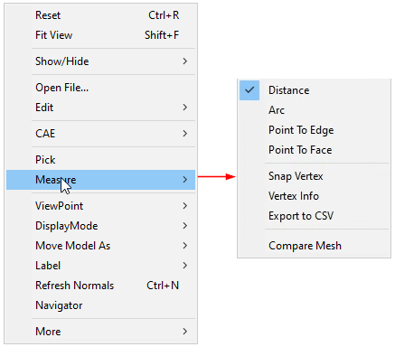
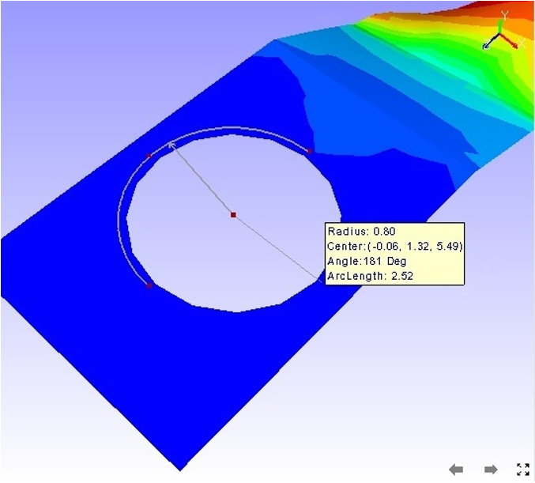

Measure
The Measure option found in the context menu lets users measure the following:
- Linear Measurement
- Point to Point
- Point to Edge
- Point to Face
- Arc Measurement
- Snap Vertex
- Vertex Info
- Export to CSV
Linear Measurement
- Point to Point : Measures distance between two points picked by the user.
- Point to Edge: Measures shortest distance between point and the edge picked by the user.
Point to Face: Measures shortest distance between a point and a triangle picked by the user.
Measure

The various options available in the Measure sub menu are explained below
| Distance | Allows users to measure the shortest distance between two points in the model. |
| Arc | Allows users to measure circular arc with its length, including angle and radius. |
| Point To Edge | Allows users to measure the shortest distance between a point and an edge. |
| Point To Face | Allows users to measure the shortest distance between a point and a polygon. |
| Snap Vertex | Allows users to pick model vertices for measurement. |
| Vertex Info | Displays mouse cursor hit point coordinates in a label. |
| Export to CSV | Exports 3D Distance data into a CSV (Comma Seperated File) |
| Compare Mesh | This module helps users to compare two meshes and its deviation as a CAE result. |
Linear Measurement
Point to Point
- Select Measure | Distance option from the Viewer context Menu or
click
 from the toolbar.
from the toolbar. - Click 2 points of interest on the model to measure the distance.
- The points clicked are highlighted in red and a line is drawn between the endpoints.
- An annotated label with distance value is attached to the middle point of the line drawn.

- Double clicking on the measure allows to format the label data and renaming the measure name.
Point to Edge
- Click Measure | Point to Edge option from the context menu.
- Click a point on a model and click on the closest triangle edge.
- The point and the closest edge will be highlighted in red. Edge is extended if the foot of perpendicular does not lie in the edge segment.
- An annotated label with distance value is attached to the middle point of the line drawn.

- Double clicking on the label pops up a measure label dialog box.
- User can edit the measure name and label attributes.
Point to Face
- Click Measure | Point to Face option from the context menu
- Click a point and a triangle on the model
- The point and triangle points will be highlighted in red.
- An annotated label with distance value is attached to the middle point of line drawn.

Arc Measurement
- Click Measure | Arc option from the context menu.
- Click on 3 points of interest to create Arc
- An arc is drawn from start point to end point passing through the second point.
- All three points are highlighted in red.
- An arrow is drawn from the center of the arc to the curve to denote the radius.
- An annotated label with arc information is attached to the center of the arc.
- The part of the curve that is hidden behind the model is drawn with dashed lines.

Snap Vertex
- This enables the user to select the nearest vertex of the model by clicking while measuring distance or an arc.
- Users can use the Snap Vertex option to assure that the arc computed and drawn is passing through actual arc points of the model.
Vertex Info
When this option is selected, users can see a label with the X, Y, Z coordinates of an existing vertex, while moving the mouse on the model.

Export to CSV
This function helps user to export all visible measurement data into a csv file.
User can achieve this either through “Tools | Measurement | Export to CSV” in menu bar or “Measure | Export to CSV” in context menu.
Sample CSV file
# Application Name: VCollab Pro X
# Application Version: 4.12.121.605
# Date & Time : 21-10-2021, 18:43:30
# Current User : karuna
# Measure Name, Measure Value, Model Name 1, Model Name 2, Node ID 1,X1,Y1,Z1, Node ID 2,X2,Y2,Z2
Measure 1,43.046,body1,Fadjuster,NA,-13.8797,-19.9479,41.2141,NA,-0.179211,3.7484,7.99158
Measure 2,31.718,body2,Fbody,NA,22.7075,-18.5456,32.922,NA,4.77808,-33.8141,11.6751
|